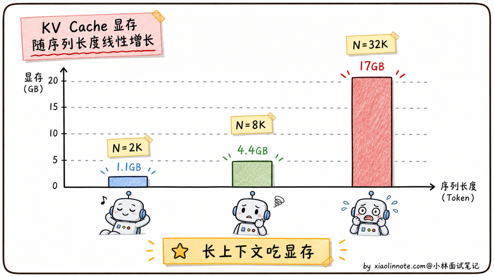
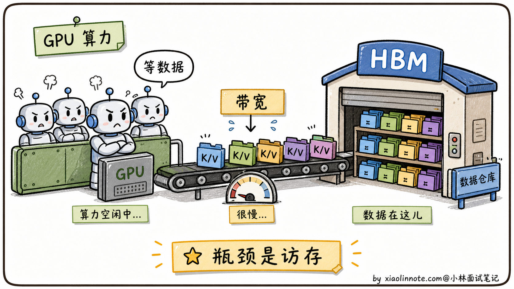
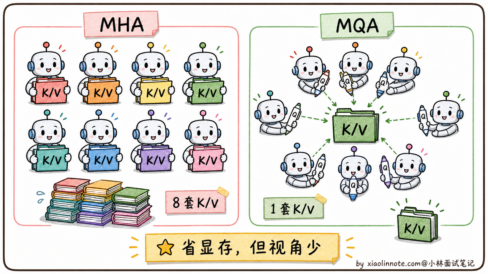
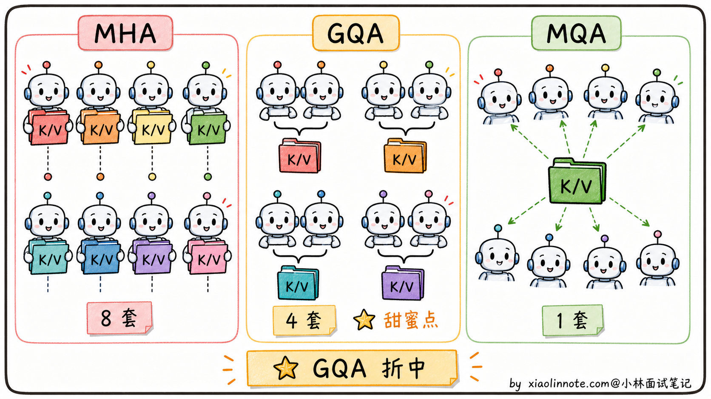
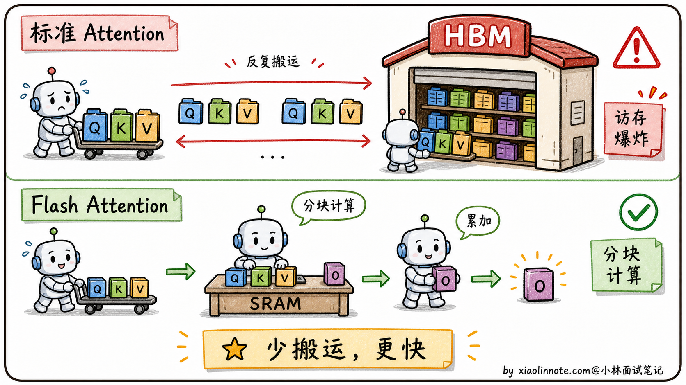
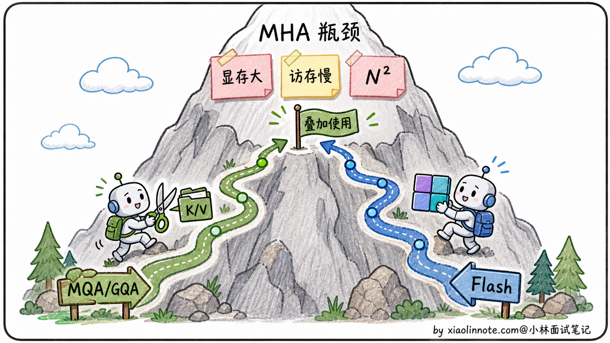
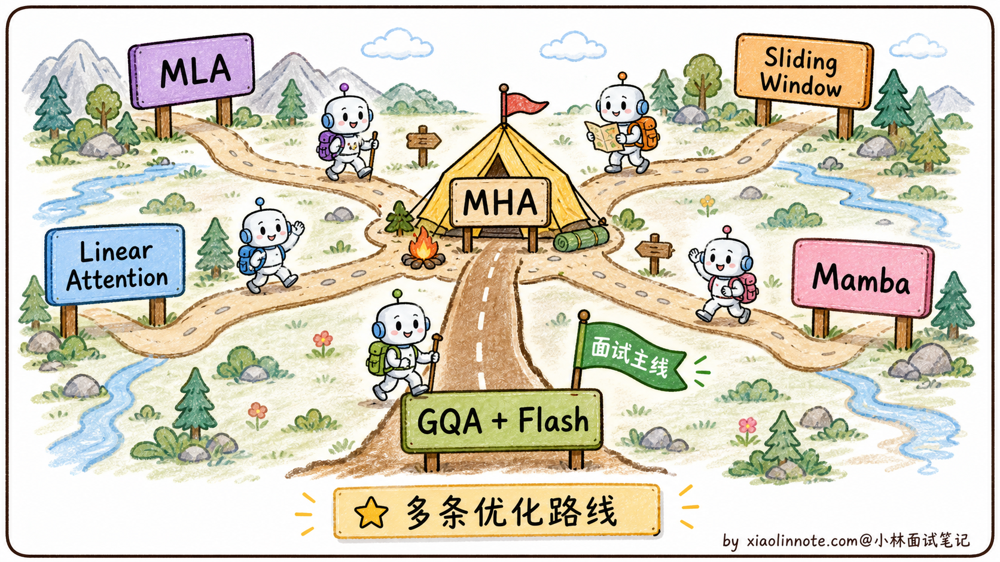

多头注意力（MHA）有哪些局限？MQA、GQA、Flash Attention 怎么解决？
👔面试官：来讲讲多头注意力（MHA）有哪些局限？工业界怎么优化？
🙋♂️我：MHA 局限我知道，就是计算复杂度是 O(N²)，长序列特别慢。Flash Attention 用了一些数学技巧让它变快。
👔面试官：……「数学技巧」是什么技巧？说具体一点。再说，O(N²) 是「计算复杂度」还是「显存复杂度」？这俩是一回事吗？还有，MHA 的真正瓶颈在训练还是推理？训练慢和推理慢是一个原因吗？
🙋♂️我：哦哦，MHA 主要是显存占用大，因为每个 token 都要保存 K 和 V。MQA 是所有头共享一份 K 和 V 来减少显存。
👔面试官：你说 MQA「所有头共享一份 K 和 V」，那它是只在推理时共享，还是训练时也共享？共享之后效果会不会下降？为什么 Llama 2 不用 MQA 而用 GQA？这两个有什么关系？
🙋♂️我：呃……GQA 是 MQA 的改进版？把头分成几组共享？
👔面试官：你这是在猜词。「分成几组」具体怎么分？分组数对效果和显存的影响是什么？为什么 Llama 系列、Qwen 系列都默认用 GQA？还有最关键的：MQA 和 GQA 是从「显存」角度优化的，Flash Attention 是从「显存 + 计算」两个角度同时优化的，这两类优化是替代关系还是叠加关系？回去搞清楚再来。
这道题问下来才发现，光说出 MQA、GQA、Flash Attention 几个名字完全不够。MHA 的瓶颈到底卡在「显存」还是「带宽」、每种方案分别在哪一层动刀、它们之间是替代关系还是可以叠加，这一整套逻辑必须捋顺。
💡 简要回答
我理解 MHA 有三个核心痛点。
第一是「显存爆炸」。推理时每个 head 都要为序列里所有 token 保存自己的 K 和 V 矩阵，这就是 KV Cache。头数越多、序列越长，显存占用越夸张。一个 7B 模型跑 32K 上下文，光 KV Cache 就能吃掉十几 GB。
第二是「访存慢」。Attention 计算里 softmax 那步要把整个 N×N 的注意力矩阵搬来搬去，频繁读写 GPU 显存，瓶颈不在算力而在「内存带宽」。
第三是「N² 复杂度」。注意力分数矩阵是 N×N 的，序列翻倍计算量翻 4 倍，长上下文极其昂贵。
工业界对应了三类优化。MQA 让所有 head 共享一份 K/V，显存压到 1/H，但表达力损失明显。GQA 是折中方案：把 H 个 head 分成 G 组，每组共享一份 K/V，效果接近 MHA 但显存接近 MQA，Llama 2 70B、Llama 3、Qwen 2/3 的不少主力模型都用这个思路。Flash Attention 是另一条思路，不改变 MHA 的结构，而是从计算实现层面把 N×N 的注意力矩阵切成小块、用 GPU 片上缓存做在线 softmax，避免反复读写大矩阵，显存从 O(N²) 降到 O(N)，速度还更快。
最关键的认知是：MQA/GQA 是「结构层」的优化，Flash Attention 是「实现层」的优化，两者是叠加关系不冲突，现在的主流模型基本上都是 GQA + Flash Attention 一起用。
📝 详细解析
先理清 MHA 的瓶颈到底卡在哪
要讲清楚 MHA 的局限，得先把「训练」和「推理」两个阶段分开看。很多人在面试里只笼统说「O(N²) 慢」，被一追问就答不下去，根源就是把这两个阶段混在一起讲。其实它们的痛点完全不一样，得分别说。
先看训练阶段。训练时一个长度为 N 的序列，每一层 Attention 都要算一个 N×N 的注意力分数矩阵 softmax(QK^T/√d) · V。这个 N×N 矩阵在显存上要存下来给反向传播用，N=4K 时已经是 1600 万个数，N=32K 时膨胀到 10 亿个数（FP16 大约 2GB）；在计算上也是 O(N²) 的复杂度，N 翻倍计算量直接翻 4 倍。听起来很吓人，但好消息是训练时这个 N×N 矩阵是「一次性算完的」，不需要在多个时间步之间持续保留。
推理阶段就是另一个故事了。LLM 是自回归生成，每次生成一个新 token，都要重新对前面所有 token 算注意力。如果每次都从头算，成本会飞快累加成 O(N³)，根本不可接受。聪明的做法是 KV Cache：把前面所有 token 的 K 和 V 矩阵存下来，每次新 token 只需要算自己的 Q，然后和缓存的 K/V 做注意力。这就是推理优化的标配。
但 KV Cache 这个救星本身就是个显存大户。粗略算一下，KV Cache 显存大小是：
2（K和V各一份）× B（batch）× N（序列长）× L（层数）× H（头数）× d_k（每头维度）× 2 字节（FP16）
对一个 7B 模型（L=32、H=32、d_k=128），跑 batch=1、N=32K：
2 × 1 × 32000 × 32 × 32 × 128 × 2 ≈ 17 GB
光 KV Cache 就要 17GB，加上模型权重 14GB，加起来 31GB，一张 4090（24GB）根本放不下。这就是长上下文场景下的头号问题，也是面试里常被追问「KV Cache 怎么省」的根源。

显存挤爆只是一面，更隐蔽的痛点是「速度也快不起来」。原因是 GPU 计算单元（CUDA Core / Tensor Core）的算力很猛，但显存带宽跟不上。Attention 计算里大量时间花在「等数据从显存搬到计算单元」，计算单元很多时候在「等米下锅」。这就是著名的 memory-bound（访存受限） 问题。哪怕你的 GPU 算力是另一台的两倍，跑 Attention 时速度可能只快 20%，因为瓶颈根本不在算力。

到这里，MHA 的三个痛点就连成一条线了。N² 复杂度让序列稍微长一点，计算量就按平方级膨胀；KV Cache 让长上下文显存爆掉；访存带宽让 GPU 算力发挥不出来。这三个痛点互相加剧，长上下文场景下尤其明显。后面的所有优化方案，都是在攻击这三个痛点中的一个或多个。
MQA：暴力共享 K/V，显存直接压到 1/H
MQA（Multi-Query Attention，多查询注意力）的思路非常暴力：所有 head 共享同一份 K 和 V，只有 Q 是每个 head 独立的。
举个例子。原本 MHA 有 32 个 head，每个 head 都有自己的 W_Q、W_K、W_V 投影矩阵，输出 32 套独立的 Q、K、V。MQA 只保留 32 套 Q（每个 head 自己的 Query），但 K 和 V 全 32 个 head 共享同一套。
这样做的直接后果：
KV Cache 立刻变成 1/H：原本要存 H=32 套 K/V，现在只存 1 套，显存占用直接降到原来的 1/32。前面那个 7B 模型 32K 上下文 17GB 的 KV Cache，用 MQA 之后只剩 0.5GB 多一点。
注意力公式不变：每个 head 还是各算各的注意力分数 softmax(Q_h · K^T)，只不过所有 head 用同一份 K，最后输出还是 H 个 head 的拼接。模型结构基本保持，训练流程几乎不用改。
但 MQA 的代价也很明显，表达能力下降。
直觉上理解：原本 32 个 head 各自有 32 套不同的「视角」（K 表示「我有什么标签」、V 表示「我的内容」），可以从 32 个角度去理解上下文；MQA 强行让 32 个 head 共用一套 K/V，等于 32 个视角变成「都看同样的标签和内容，只是用不同的 Query 去问」，多视角的能力被压缩成单视角。
实测效果上，MQA 在大模型上效果会下降 2-5%，对简单任务可能差不多，但对推理类任务（数学、代码）会有明显损失。所以 MQA 在工业界不如它的折中版本受欢迎。

GQA：折中方案，效果与显存的甜蜜点
GQA（Grouped-Query Attention，分组查询注意力）是 MHA 和 MQA 的折中。
它的思路是：把 H 个 head 分成 G 组，每组内部共享一份 K/V，组之间各自独立。
数学上很直观：
- MHA：H 个 head，H 套 K/V
- MQA：H 个 head，1 套 K/V
- GQA：H 个 head，G 套 K/V（1 ≤ G ≤ H）
GQA 是个连续光谱，G=H 退化成 MHA，G=1 退化成 MQA，中间任意取值都行。
为什么 GQA 是个好折中？
显存上：KV Cache 从原本的 H 套压到 G 套，显存占用是 G/H 比例。比如 H=32、G=8 时，显存压到 1/4，比 MQA 的 1/32 略大但也很省。
表达力上：每组内部共享 K/V，组间独立，等于每组都有自己的「视角」。组数越多视角越丰富，G=8 通常已经足够保持模型效果。
实测效果：Meta 的 GQA 论文里，G=8 配置下，模型效果几乎和 MHA 持平（差距 < 0.5%），但 KV Cache 压到 1/4。这种「显存大幅下降、效果几乎不损失」的甜蜜点，让 GQA 成为现代大模型的标配。

哪些主流模型用 GQA：
- Llama 2 70B 开始用 GQA（H=64，G=8）
- Llama 3 全系都用 GQA
- Qwen 2/3 主力模型用 GQA
- DeepSeek V2/V3 用了另一条更激进的路线 MLA（Multi-head Latent Attention，多头潜在注意力），把 K/V 压缩到一个低秩潜在空间存储，目标同样是压低 KV Cache，但它不是简单的 GQA 变体
MLA 的思路是：不直接共享 K/V，而是把每个 token 的 K/V 通过降维投影压缩到低维 latent 向量里存起来，需要时再配合额外投影参与注意力计算。这样存的不是「H 套或 G 套高维 K/V」，而是「低维压缩后的 K/V 表示」，显存比传统 MHA / GQA 更省。它和 GQA 的目标相似，都是省 KV Cache，但实现机制不同，别简单说成「GQA 的升级版」。
Flash Attention：换条赛道，从计算实现优化
MQA 和 GQA 都是改 Attention 结构，从「需要存几套 K/V」这个角度切入。Flash Attention 完全是另一条赛道，不改 Attention 的数学公式，从底层实现优化。
要理解 Flash Attention 厉害在哪，得先回到上面提到的「访存瓶颈」。
问题的根源：显存层级差距巨大
GPU 的存储分两层：
- HBM（High Bandwidth Memory，高带宽显存）：容量大（A100 是 40GB/80GB），但带宽相对慢（1.5 TB/s）。这就是平时说的「显存」
- SRAM（Static RAM，片上缓存）：容量小（A100 每个 SM 只有 192KB），但带宽极快（19 TB/s，是 HBM 的 13 倍）
标准 Attention 的实现是这样的：
# 标准实现，每一步都把大矩阵搬到 HBM 上存一次
S = Q @ K.T # 算出 N×N 注意力分数矩阵，写回 HBM
P = softmax(S) # 从 HBM 读 S，算 softmax，再写回 HBM
O = P @ V # 从 HBM 读 P，算最终输出 O，再写回 HBM
整个过程在 HBM 上反复读写 N×N 这种大矩阵，访存时间远超实际计算时间。这就是为什么 N=4K 的注意力比 N=2K 慢 4 倍以上（理论应该是 4 倍，实际更糟），瓶颈在于 HBM 来回搬运 N² 大小的中间结果。
Flash Attention 的核心思路：分块 + 在线 softmax
Flash Attention 提出：既然 SRAM 带宽快但容量小，那就把 Q、K、V 切成小块（比如 128×128），每次只在 SRAM 里算一小块的注意力，算完就直接和最终输出 O 累加，不把 N×N 的中间矩阵写回 HBM。
听起来简单，但有个数学难题：softmax 操作要看「整行」才能算出来，不能局部独立计算。Flash Attention 用了一个叫「在线 softmax（online softmax）」的算法，分块计算的同时维护一个「当前最大值 + 累积和」的状态，每来一块就做增量更新，最终结果和一次性算 softmax 完全一样。

这样做的好处是：
显存从 O(N²) 降到 O(N)：再也不需要把 N×N 的中间矩阵存 HBM，只存最终输出 O 就够了。
速度提升 2-4 倍：HBM 读写次数从 O(N²) 降到 O(N²/M)（M 是块大小），实际速度比标准 Attention 快 2-4 倍。
结果在数学上等价：Flash Attention 算的是同一个 Attention 公式，不是稀疏近似或低秩近似。实际浮点实现里，因为分块顺序和数值精度不同，最后几位可能有微小差异，但不会像近似注意力那样引入模型精度损失。
Flash Attention 现在已经迭代到 v3 版本，针对 H100 等新一代 GPU 做了进一步优化，基本已经成为大模型推理框架（vLLM、SGLang、TGI）的默认实现。
三类优化的关系：是叠加不是替代
讲到这里，可以把三类优化总结成一张表：
| 优化方案 | 改的是什么 | 攻击的痛点 | 效果损失 |
|---|---|---|---|
| MQA | Attention 结构（K/V 压成 1 份） | 显存大 | 中等（2-5%） |
| GQA | Attention 结构（K/V 压成 G 份） | 显存大 | 几乎无（< 0.5%） |
| Flash Attention | Attention 实现（计算分块 + 在线 softmax） | 显存大 + 访存慢 + 速度慢 | 基本无（数学等价，浮点细节略有差异） |
关键的认知：这三类优化是叠加关系，不是替代关系。
MQA/GQA 是「结构层」的优化，改的是 Attention 公式里有几套 K/V，让 KV Cache 占用降下来。Flash Attention 是「实现层」的优化，改的是 Attention 计算的具体执行方式，让计算和访存都加速。
它们攻击的是不同维度的问题，可以同时使用。现在主流大模型的标配是：
GQA 结构 + Flash Attention 实现
比如 Llama 3、Qwen 2、DeepSeek V3 都是这个组合。GQA 把 KV Cache 显存压到 1/4，Flash Attention 让 Attention 计算速度提升 2-4 倍。两者叠加后，一个 7B 模型能在消费级显卡（4090 24GB）上跑 32K 长上下文，搁 5 年前是不敢想的事情。

这个「叠加」的认知很重要。面试官如果追问「MQA、GQA、Flash Attention 你只能选一个用，选哪个」，你应该指出这是个伪命题：真实工程里它们一定是组合用的，因为它们攻击的是不同维度的瓶颈。能说出这一句，面试官就知道你不是在背单点优化，而是真的理解了整套优化体系的层次结构。
拓展：长上下文时代还有哪些新方向
最近一两年，长上下文（100K+ token）成为各家大模型的标配，MHA 的优化也在继续往前推。简单提几个进阶方向，作为补充：
- MLA（Multi-head Latent Attention）：DeepSeek V2/V3 用的方案，前面提过。把 K/V 压缩到低维潜在空间，KV Cache 比 GQA 还小，效果反而更好
- Sliding Window Attention（滑动窗口注意力）：每个 token 只关注最近 N 个 token（比如 N=4096），不再做全局注意力。Mistral 系列用了这个思路。代价是丢失远距离信息，所以通常和全局注意力混合用
- Linear Attention（线性注意力）：用核函数近似 softmax，把 Attention 复杂度从 O(N²) 降到 O(N)。代表是 Performer、Linformer，但效果离 MHA 还是差一截，没成为主流
- Mamba / 状态空间模型（SSM）：完全抛弃 Attention，用状态空间方程替代。理论上可以处理无限长上下文，但实际效果还有争议，目前是研究热点而不是工程主流

需要强调的是，这些方向大多还在演进，大厂面试问到 MHA 优化，把 MQA、GQA、Flash Attention 这三个讲清楚就足够拿高分了。MLA 作为加分项可以提一句，再深的就不用展开。
🎯 面试总结
回到开头那段对话，被怼三次后再回答这个问题，最重要的是先把 MHA 的三个痛点讲清楚，因为这是整道题的地基。
讲三个痛点的时候可以这样组织：显存上 KV Cache 随头数和序列线性增长，长上下文场景一下就吃光显存；访存上 Attention 计算反复读写 HBM 大矩阵，瓶颈不在算力在带宽；复杂度上注意力矩阵是 N×N，序列翻倍计算量翻 4 倍。这三个痛点是连在一起的，长上下文场景下尤其明显，也是后面所有优化的出发点。
讲完痛点之后，把三类优化方案各自的位置讲清。MQA 是暴力共享 K/V，显存压到 1/H 但表达力有损失；GQA 是分组折中（Llama 2 70B、Llama 3、Qwen 2/3 的不少主力模型都用），显存接近 MQA 但效果接近 MHA，是甜蜜点；Flash Attention 走另一条赛道，不改 Attention 结构，从计算实现层面用「分块 + 在线 softmax」把显存从 O(N²) 降到 O(N)，速度还快 2-4 倍。
最关键的一句话是：这三类优化是叠加不是替代。结构层（GQA）和实现层（Flash Attention）攻击的痛点不同，主流大模型都是 GQA + Flash Attention 同时用。能说出这句话，面试官就知道你不是在背单点，而是真的理解了这套优化体系的层次结构。
如果还想再加分，可以提一句 MLA（DeepSeek 用的低秩潜在注意力）作为更前沿的方向，让面试官知道你跟得上技术节奏。